Presentation
The world of Lorderon can be cruel and ruthless; it is a place where only the strongest and most persistent warriors survive. For this reason, the entire game is built to give you nothing for free, and you must fight hard for everything.
The experience required for advancement and the item drop rates are carefully balanced. The path upward is smooth, but every step and every achievement represents an adequate reward for your efforts.
As a result, you will gain a unique experience where your hard work bears real fruit. Lorderon is not a monotonous routine, but a challenge that tests your skills and rewards your perseverance.
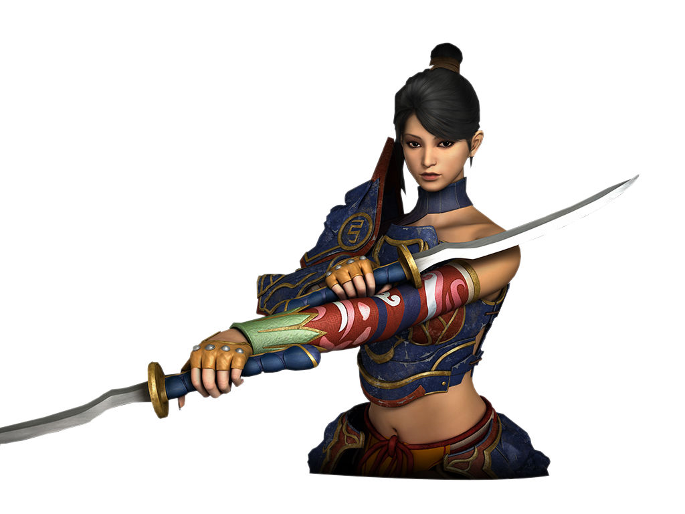
Getting Started
Entering the world of Lorderon is designed so that your start is smooth and you can jump right into the action. Every new hero receives a carefully selected starter pack.
Starter Equipment
From the first moment, you will be equipped with basic armor and weapons upgraded to +3, ensuring you have enough power and defense for your first battles with monsters.
- Faithful Companion: You will receive a 7-day starter pet at the beginning, providing you with helpful bonuses.
- Fast Travel: You will also receive a basic mount, allowing you to move through the maps much faster.
- Full Support: The starter pack contains everything you need to focus fully on exploring the world and completing quests.
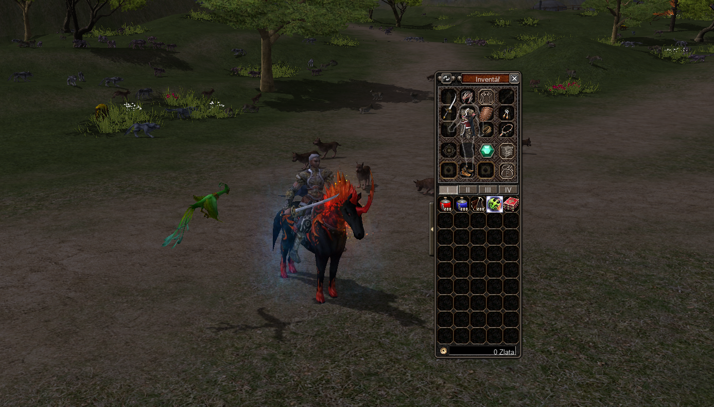
Starter Pack ContentsMulti-language Support
We want to create a large and diverse community, which is why an advanced language switching system is implemented in the game. At the same time, the set language is visibly displayed for each character, significantly simplifying communication and interaction between players from different corners of the world.
Characters
A total of 5 unique characters are available in the world of Lorderon. Each character (except for the Lycan) offers a choice between two possible skill specializations, allowing players to tailor their playstyle to their preferences.
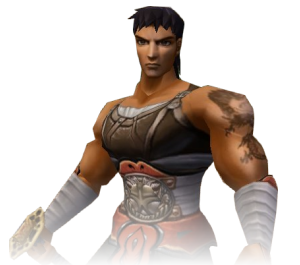
Warrior
Warriors play an important role in melee combat thanks to their skills, weapons, and heavy armor. They strive for physical strength and balanced peace of mind. They can deal devastating damage with two-handed weapons or elegantly deflect attacks with a sword and shield.
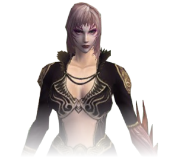
Sura
Suras are warriors who gained magical powers after letting the seed of the devil sprout in their arms. They are capable of fighting agilely with a sword up close or damaging opponents with long-range magic, which they constantly improve.
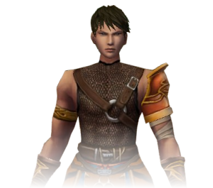
Ninja
Ninjas are professional assassins, capable of attacking sneakily and silently. They wear only light armor, which does not hinder their fast and fluid movements. They are masters of both daggers and bows for long-range combat.
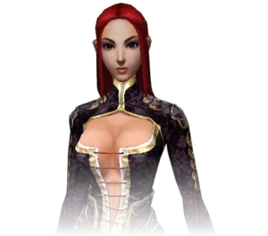
Shaman
Shamans use wisdom, spells, and magic in battle. Their mystical abilities benefit not only themselves but also their comrades. They have the ability to strengthen attacks or cast powerful spells for healing and team support.
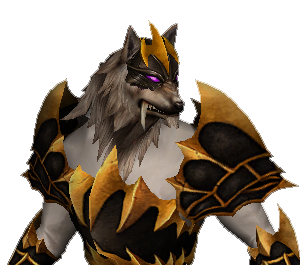
Lycan
Lycans are imposing wolf-like creatures that were once transformed into predatory beasts by a viral infection. Thanks to their unbridled energy and instincts, they are unsurpassed in melee combat. (Available only for male gender).
Dungeon System
Lorderon brings a sophisticated dungeon system that provides all the necessary information directly in the game. Forget about constantly searching for information on a wiki – everything important is at your fingertips.
In the clear interface, you will find complete details about each instance: from the type of dungeon, through necessary bonuses and defenses, to precise times and entry conditions. Every step of your expedition is thus accompanied by maximum information.
For the most ambitious among you, we have implemented a Dungeon Ranking. Track the best times, the highest damage dealt, or the number of successful completions. Outdo other players and write your name into the history of Lorderon as an unsurpassed champion.
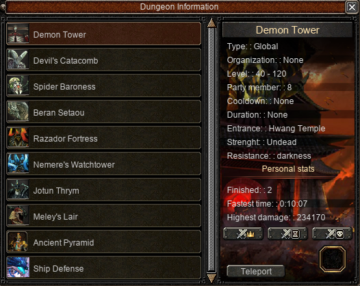
Detailed Dungeon Overview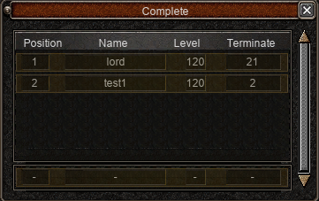
Competitive LeaderboardDragon Soul Alchemy
Dragon Soul Alchemy is a powerful system designed for experienced warriors who want to push the limits of their character's power. This system allows you to equip your character with six unique stones, each offering specific bonuses and elemental power.
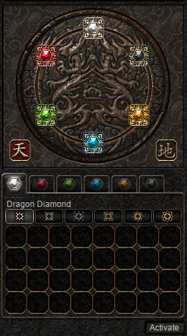
Six Elemental Powers
Refinement and Improvement
Each stone can be improved in three different directions, increasing its efficiency and number of bonuses:
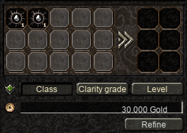
Grade & Purity
By increasing the grade (from Rough to Mythical), the stone gains more bonuses. Purity then determines the actual value of these bonuses.
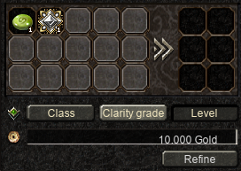
Level (+0 to +6)
Using Dragon Beans, you can increase the level of the stone, further strengthening its basic and additional properties.
Switching Bonuses (Dragon Flame)
If you are not satisfied with the additional bonuses on your Legendary or Mythical stones, you can use a Dragon Flame. This rare item allows you to switch the stone's bonuses and try to get the ideal combination (e.g., Average Damage and Attack Value on a Ruby).
Set Bonus
When equipping and activating a complete set of six dragon stones of the same grade, your character gains a special set bonus. This effect significantly increases the base attributes of all equipped stones, making the mythical set one of the strongest equipment elements in the game.
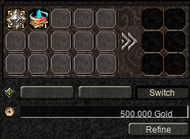
Sash System
Sashes are a prestigious part of equipment that not only look great but primarily allow the character to absorb part of the power of another weapon or armor. Master Theowahdan takes care of upgrading and modifying sashes in the world of Lorderon.
Bonus Absorption
A unique feature of sashes is their ability to absorb attributes from another item. The quality of the sash determines what percentage of the item's original power you gain (up to 25% for custom sashes). In this way, you can transfer damage from powerful weapons or defense from armor to the sash.
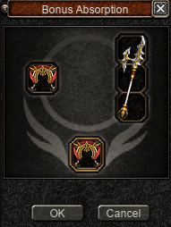
Bonus Absorption Process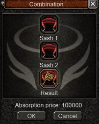
Combining and Quality Grades
Sashes exist in four quality grades: Basic, Fine, Noble, and Custom. By combining two sashes of the same grade at Theowahdan, you can obtain a higher quality sash, thereby increasing its absorption ratio.
- Basic: Absorption up to 1%
- Fine: Absorption up to 5%
- Noble: Absorption up to 10%
- Custom: Absorption 11% to 25% (can be further improved)
Lord Sash
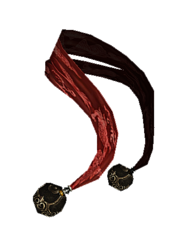
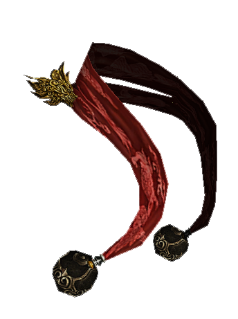
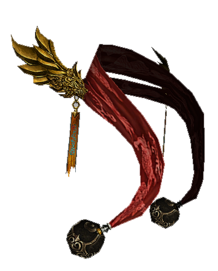
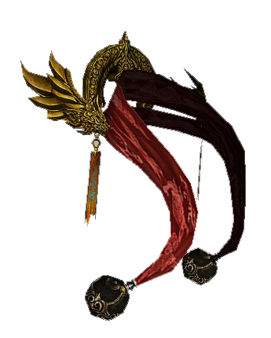
Master Sash
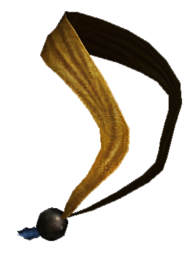
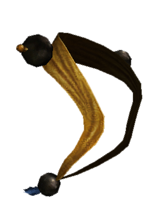
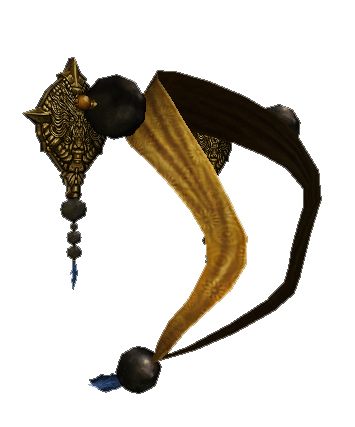
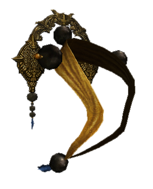
Royal Sash
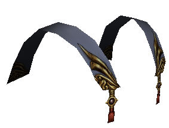
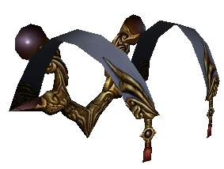
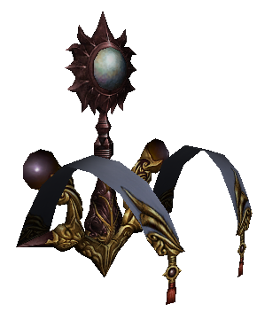
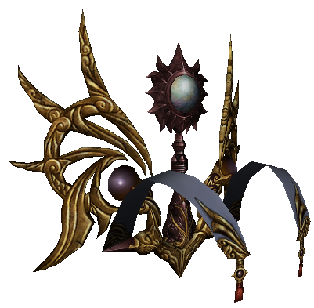
Sovereign Sash
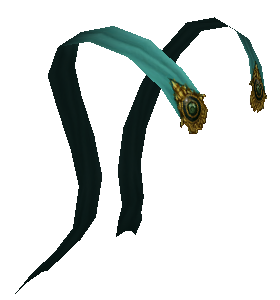
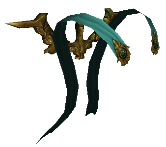
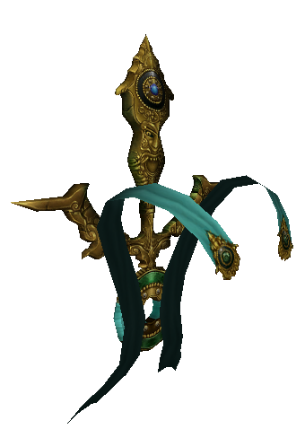
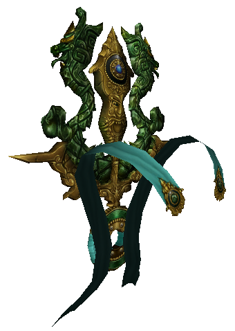
Aura System
The Aura Outfit works on a similar principle to the Sash System but with unique properties. This outfit absorbs bonuses from bracelets, earrings, necklaces, and shields.
Bonus Absorption
Bonus transfer occurs at Master Theowahdan. The item from which you absorb bonuses is destroyed in the process. The absorption percentage depends on the current level and quality of your aura.
While regular bonuses are reduced by the absorption ratio, special bonuses like Blackout Resistance or Slow Resistance are always absorbed in full.
Tip: During absorption, values are rounded down; however, if the resulting value is less than 1, it is rounded up to 1.
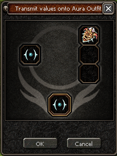
Improvement and Evolution
The Aura Outfit has a total of 250 levels. Each level increases the absorption ratio by 0.1%, up to a maximum of 25%. Special Ice and Fire Runes are used for upgrading, which provide the aura with the necessary experience (EXP).
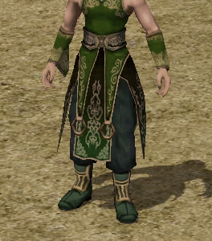
Ordinary
Level 1-49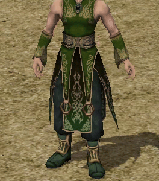
Simple
Level 50-99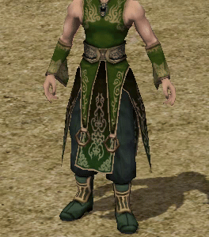
Noble
Level 100-149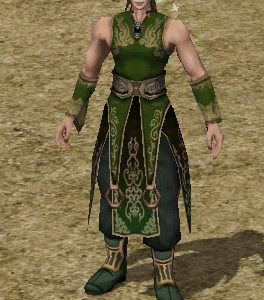
Magnificent
Level 150-199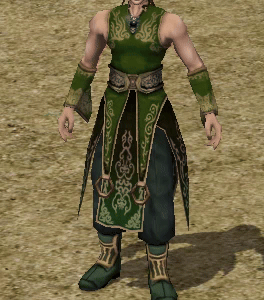
Sparkling
Level 200-249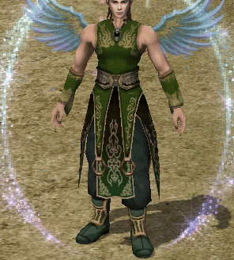
Radiant
Level 250Talisman System
A talisman is a unique piece of equipment placed in a special slot in the inventory (to the left of the belts). These powerful items provide the character with elemental power and other specific bonuses necessary for overcoming the most demanding challenges.
Properties and Bonuses
Each talisman contains its specific elemental bonus, the strength of which increases with the talisman's level. For example, a Wind Talisman +57 provides a massive +57% Wind Power bonus.
In addition, secondary bonuses can be added to talismans, which can also be effective against monsters for which the given talisman is not primarily intended.
List of Elemental Talismans
Fire Talisman
Provides Fire Power (up to 200%). Effective in the Fire Land and against fire creatures.
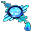
Ice Talisman
Provides Ice Power (up to 200%). Essential for expeditions to the Ice Cave.
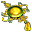
Earth Talisman
Provides Earth Power (up to 200%). Effective against earth elementals.
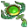
Wind Talisman
Provides Wind Power (up to 200%). Increases efficiency in areas dominated by wind elements.
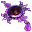
Darkness Talisman
Provides Darkness Power (up to 200%). Key for combat in dark temples.
Lightning Talisman
Provides Lightning Power (up to 200%). Helps overcome lightning traps and enemies.
Biologist System
Biological research is a key part of your character's development. Help Biologist Chaegirab and Scholar Seon-Pyeong with their research and receive permanent bonuses as a reward, which will significantly strengthen your statistics.
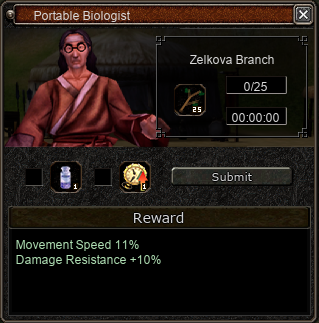
Research Process
Upon reaching the required level, a quest will automatically become available to you. Your goal is to collect specific items from monsters and deliver them to the Biologist.
Info: In our system, you only deliver the research items themselves; soul stones are not required for completion.
Biologist Research Overview
| Lv. | Item to deliver | Permanent Reward |
|---|---|---|
| 30 | 10x Orc Tooth | +10 Movement Speed |
| 40 | 15x Curse Book | +5% Attack Speed |
| 50 | 15x Demon's Keepsake | +60 Defense |
| 60 | 20x Ice Marble | +50 Attack Value |
| 70 | 25x Zelkova Branch | +11% Movement Speed, +10% Damage Reduction |
| 80 | 30x Tugyi's Tablet | +6% Attack Speed, +10% Attack Value |
| 85 | 40x Ghost Tree Branch | +10% Resistance against players |
| 90 | 50x Leader's Notes | +8% Strong against players |
| Seon-Pyeong's Research | ||
| 92 | 10x Jewel of Envy | Selection: +1000 HP / +120 Defense / +51 Attack |
| 94 | 20x Jewel of Wisdom | Selection: +1100 HP / +140 Defense / +60 Attack |
Pet System
Pets in our world are not just aesthetic additions but powerful companions that grow with you. Unlike common systems, our pet system is straightforward and focused on smooth development without unnecessary complications.
Hatching and Care
It all starts with obtaining an egg from the respective boss. After hatching (by pressing the P key or via the quick access panel), your pet will receive random starting bonuses to HP, Defense, and SP.
- Smart Stamina: The pet's duration is only deducted when it is actively summoned.
- Unique Companion: Pets are non-tradable and remain faithfully with their owner.
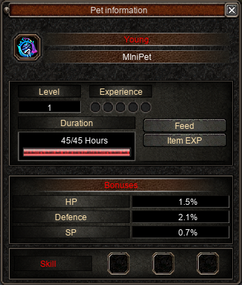
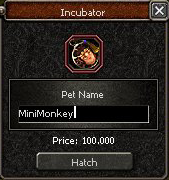
Incubator
As soon as you right-click on an egg, the Incubator window opens. Here you can choose a name for your new companion (4 to 20 characters). After paying a fee of 100,000 Gold, the pet hatches and is ready to be summoned.
Available Pets
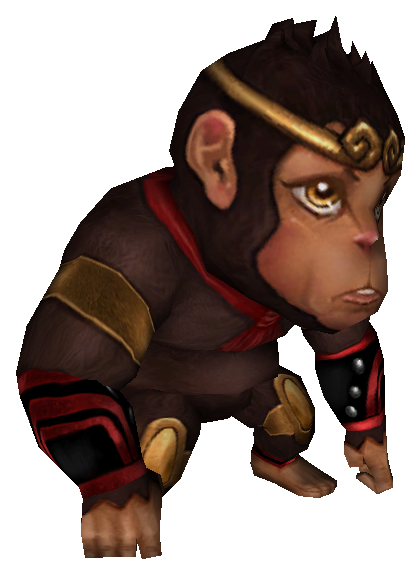
Monkey
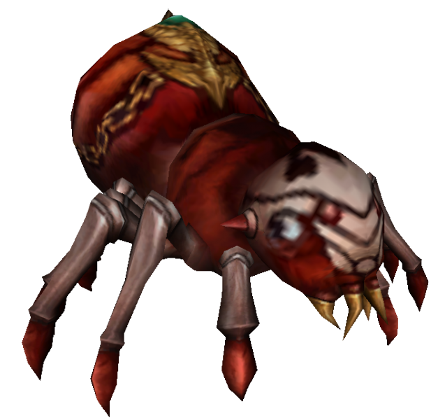
Spider
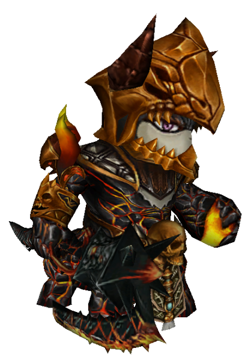
Razador
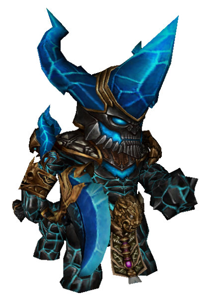
Nemere
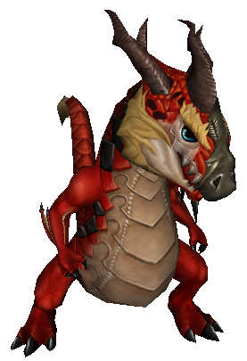
Meley
Nessie (Hydra)
Experience and Levels
Your pet can reach up to level 120. It gains experience automatically while killing monsters if it is summoned. Levels increase smoothly without the need for complex evolutions or developmental stages.
In addition to red experience orbs, there is also a blue orb that you can fill by "sacrificing" unneeded equipment items, which will speed up your companion's growth.
Pet Skills
Each pet can learn up to 3 unique skills (passive and active).
Training
Skills are learned and improved using the appropriate books. Training proceeds up to level 20.
Skill Examples
Pet Combination
In addition to the Levelable Pet system described above, the classic pet system is still available in the game. This means that a player can have two different types of pets summoned simultaneously and thus benefit from the bonuses of both systems at once.
Mount System
Our mount system is designed for maximum smoothness and comfort during your travels through the world of Lorderon.
Your Faithful Companion
After equipping the respective seal, the mount will appear by your side. It will follow you every step of the way, ready for immediate mounting.
- Smoothness: The system works on the same principle as a classic horse, allowing for lightning-fast and smooth mounting and dismounting.
- Dynamics: The mount follows you everywhere you go on foot, so it's always at hand for quick travel.
- Style and Power: In addition to faster movement, mounts also provide additional bonuses for your character.
Tip: You can use the standard keyboard shortcuts you are used to with a horse (Ctrl+G / Ctrl+H) to mount and dismount.
 Preview of the mount system in action
Preview of the mount system in action
PvP Skills
Enter a new era of combat with the 7th and 8th skills. These passive skills allow you to either minimize damage from your opponents' strongest spells or, conversely, drastically increase the power of your own attacks.
7th Skill: Ward
Allows you to reduce damage from one specific spell. Each player can choose any ward from a list of 9 skills.
| Level | Damage Reduction |
|---|---|
| 1 | 1,2 % |
| M1 | 12 % |
| G1 | 19,7 % |
| P | 30 % |
8th Skill: Boost
Increases the damage of your own main spell. This skill can only be obtained after reaching the 7th skill at level P.
| Level | Attack Increase |
|---|---|
| 1 | 0,8 % |
| M1 | 8 % |
| G1 | 13,1 % |
| P | 20 % |
Upgrade System
Upgrading the 7th and 8th skills proceeds similarly to standard skills, but using specific items:
Available Skills
Sword Spin
Warrior (Body)
Ambush
Ninja (Dagger)
Finger Strike
Sura (Weaponry)
Shooting Dragon
Shaman (Dragon)
Spirit Strike
Warrior (Mental)
Fire Arrow
Ninja (Archery)
Dark Strike
Sura (Black Magic)
Summon Lightning
Shaman (Healing)

Wolf's Breath
Lycan (Instinct)
Offline Shop
Our sophisticated offline shop system allows you to sell your goods even when you are not currently in the game. This system is designed for maximum convenience and efficiency in your trading.
General Information
You can create and manage an offline shop using a clear UI, which you open with the J key. The shop will remain open for a duration you choose, allowing you to sell items even when you are offline or moving through a completely different map.
You can also manage the shop and collect money from anywhere.
Shop Search (Search Glass)
Forget about tedious rounds around the square. If you own a Search Glass item, you can use it to instantly search for specific items in shops all over the world.
Obtaining: You can obtain the Search Glass as a rare drop from bosses or purchase it from the Shopkeeper NPC. Searching works from anywhere and allows you to make purchases directly from the search interface.
Target Info System
Want to know exactly what you can get from the enemy you are currently attacking? Our target information system provides you with an instant overview of the possible drop without the need to open any menus.
Information at your Fingertips
For every monster, boss, or meteor, a small button with a question mark appears next to its name when clicked. Clicking this button opens a clear window with a list of all items that the given target can leave behind after being defeated.
- Instant Overview: Find out the drop chance directly in battle.
- Transparency: You will see all available items, including rare ones.
- Speed: No unnecessary searching – one click and you know everything.
 Drop display directly at the selected target
Drop display directly at the selected target
Ingame Wikipedia
Forget about constantly switching between the game and the browser. With our integrated in-game Wikipedia, you have all the knowledge of the world of Lorderon available instantly at a single click.
Everything under One Roof
Want to know what drops from a specific boss? What bonuses can be added to your daggers? Or exactly where to find the monster you're looking for? Our Wikipedia will answer everything.
- Drop Info: A complete list of items you can obtain from monsters.
- Bonuses: A detailed overview of all available bonuses for each type of equipment.
- Location: Precise information about the occurrence of mobs and bosses in individual maps.
- Upgrading: An overview of the materials needed to upgrade your items.
Tip: You can access the Wikipedia via the main menu or a keyboard shortcut, allowing you to quickly plan your next move without interrupting your gaming experience.
Daily Rewards
Loyalty pays off on Lorderon. Our daily rewards system is designed to be as simple and straightforward as possible – just be active and you won't miss out on your reward.
A Gift for your Activity
Every day you log into the game, a useful pack awaits you. No complex conditions or tedious tasks, just log in and pick up your bonus.
- Speed: Picking up the reward is a matter of a moment directly in the game interface.
- Regularity: A new reward is ready for you every 24 hours.
- Usefulness: Rewards contain items that you will actually use in your daily adventure.
Info: The system automatically tracks your time and makes the reward available as soon as the set time has elapsed since the last pickup.
 Daily rewards interface
Daily rewards interface
Automatic Events
The world of Lorderon never sleeps. Our automatic events system is carefully designed to cover various time slots throughout the day. Regardless of when you play, you'll always come across an interesting activity to spice up your gaming experience.
Experience & Bonuses
Regular increases in EXP gain and special Bonus events that will help you advance your character faster.
Double Drop
Increase your gains thanks to Double Drop from Bosses and Double Drop from Meteors events. Ideal time to farm rare items.
Economy & Drop
Strengthen your wallet during Yang events or look for rare treasures during the wide Item Drop event.
Special Events
Popular Moonlight Treasure Chests, double rewards from Mission Books, and other unique activities that rotate at regular intervals.
Info: All events are fully automated and their start and end are always announced directly in the game chat, so you won't miss any action.
Quality of Life
The gaming experience on Lorderon is not just about systems, but also about details that make everyday playing smoother and more enjoyable. We focused on removing unnecessary obstacles and overall modernization of the game engine.
Gaming Comfort
- Party Buff & Range: Buffing within a group now works at a long distance, making cooperation in dungeons easier.
- Dungeon Rejoin: The possibility to return to an ongoing dungeon in case of unintentional disconnection from the game.
- Protective Shield: After reviving, the player gains a short-term shield that prevents an immediate "spawn kill".
- Extended Safebox: More space for your treasures thanks to the extended Safebox system.
- CH Switcher: Switching between channels is lightning-fast and available directly from the game interface without the need to log out.
Balance & Drop
We have adjusted the algorithm for obtaining items. If a character kills monsters or destroys Meteor stones with a level difference of up to 30 LVL, they still receive the maximum possible drop. This allows for efficient farming even in more advanced stages of the game.
Mount System: Our mount system is fully integrated for immediate use without unnecessary delays.
Technical Optimization & Engine
Itemshop & Project Support
The Lorderon project is a vast world that requires constant development and maintenance. For this reason, an Itemshop is accessible in the game, which serves to finance the operation of the server and the team.
Our Philosophy
The entire game was designed as a complete experience without the need for an Itemshop, which was added to the system as the very last step. We firmly stand by the fact that no player will be forced to make purchases to play fully and compete with others.
- Availability: All items offered in the Itemshop are also obtainable directly in the game through normal play.
- Fairness: You won't find any premium (VIP) system on Lorderon. All players have the same conditions.
- Aesthetics: During special events, unique skins will be available, but they are purely aesthetic in nature and do not affect the game balance.
Support: Purchasing in the Itemshop is a voluntary gesture by players who want to support the further development of the game and thus express satisfaction with our work. Thank you!
Frequently Asked Questions (FAQ)
What is the server type and maximum level?
Lorderon is a Middleschool server with a maximum level of 120. Our concept creates a balanced environment suitable for both casual and demanding players looking for a challenge.
Is the Lycan character available in the game?
Yes, the Lycan is fully implemented, including its unique skills. It is available only for the male gender.
How does the Biologist system work?
In our system, you only deliver the research items themselves. Soul stones are not required for completion, which makes the research process smoother.
Can I play in my native language?
Yes, we support a wide range of languages including Czech, English, German, Polish, and many others. The language can be easily switched directly in the game settings.
What is the difference between pets?
We use a unique "Dual Pet" system. You can have one trainable pet (Levelable Pet) and one classic pet summoned at the same time, benefiting from the bonuses of both at once.
Do I have to go to the square to search for items?
Not at all. Thanks to the Search Glass item, you can search shops and buy items from anywhere in the world.
Do you have more questions? Don't hesitate to contact our team on Discord or directly in the game. We look forward to seeing you in the world of Lorderon!